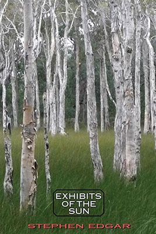

Exhibits of the Sun
Stephen Edgar

Description
You run your eyes across the glossy Lithography of paradise: the sand’s White gold, the opaline transparent blue You’ll soon be lolling in, a sky unmarred And constant to the limits of the view— All in your hands. You take the tickets, pass your credit card. “Look, look,” exhorts the opening poem of this dazzling new collection. The discoveries of observation, both physical and intellectual, ravishing and harrowing, are recounted across a broad sweep of experience. Edgar returns habitually to the character of light. Exhibits of the Sun moves from the ghostly Ferris wheel of Saturn’s rings to the beach pavilion wrapped in ochre fog during Sydney’s dust storm, from the glimpses of a lover’s light-shaped body in the passage of the moon to a vision of a whole lifetime between one eye blink and the next. Presiding over all is Walter Benjamin’s Angel of History, swept away into the future as he looks back on the unravelled pageant of humanity. On the short list of the best living practitioners of verse, rhymed or blank. . Joshua Mehigan, Poetry (Chicago) They said of his last book Eldershaw : a brilliant piece of ‘uncanny’ fiction… alive and convincing at every point, crackling with engagement and intensity.. Martin Duwell, Australian Poetry Review [A] wonderful love poem and elegy… [of] almost unbearable poignancy. The final dateless narrative, ‘The Pool’, is a high point of Australian poetry . Geoffrey Lehmann, The Weekend Australian
Description
You run your eyes across the glossy Lithography of paradise: the sand’s White gold, the opaline transparent blue You’ll soon be lolling in, a sky unmarred And constant to the limits of the view— All in your hands. You take the tickets, pass your credit card. “Look, look,” exhorts the opening poem of this dazzling new collection. The discoveries of observation, both physical and intellectual, ravishing and harrowing, are recounted across a broad sweep of experience. Edgar returns habitually to the character of light. Exhibits of the Sun moves from the ghostly Ferris wheel of Saturn’s rings to the beach pavilion wrapped in ochre fog during Sydney’s dust storm, from the glimpses of a lover’s light-shaped body in the passage of the moon to a vision of a whole lifetime between one eye blink and the next. Presiding over all is Walter Benjamin’s Angel of History, swept away into the future as he looks back on the unravelled pageant of humanity. On the short list of the best living practitioners of verse, rhymed or blank. . Joshua Mehigan, Poetry (Chicago) They said of his last book Eldershaw : a brilliant piece of ‘uncanny’ fiction… alive and convincing at every point, crackling with engagement and intensity.. Martin Duwell, Australian Poetry Review [A] wonderful love poem and elegy… [of] almost unbearable poignancy. The final dateless narrative, ‘The Pool’, is a high point of Australian poetry . Geoffrey Lehmann, The Weekend Australian
{kind=link}
Information
| ISBN | 9781876044886 |
| Release | 2014 |
| Pages | 69 |
About the Author
Reviews
Australian Book Review Geoffrey Lehmann reviews Exhibits of the Sun by Stephen Edgar
Exhibits of the Sun Geoffrey Lehmann Australian Book Review , 1 December 2014 ‘Edgar is a master of rhyme’ Exhibits of the Sun is Stephen Edgar’s tenth collection of poems. Born in 1951, he is now ripe for a major Collected Poems. With careful pruning of some lesser pieces, such a book will display the full range of his work, which marries virtuosic technique with powerful emotion and intellect. Edgar is a master of rhyme. In the poem ‘Sight-Reading’ he rhymes ‘who’, ‘view’, and ‘you’ – all fairly standard rhymes – with ‘autocue’. There is something uncanny and magical about rhyme. It can be seen as a form of coupled oscillation. The inventor of the pendulum clock, Christiaan Huygens, sick in bed, noticed an ‘odd kind of sympathy’ between the pendulums of two of his clocks mounted in the one case. Over time they would start to swing in synchrony in precisely opposite directions, irrespective of how they began. (He wrote about this strange effect in 1665.) Coupled oscillation is used in lasers and superconductors. It also pervades the natural world: for example, in the pacemaker cells that regulate our heartbeats, the synchronised chirping of crickets and flashing of fireflies, and butterfly irises ( dietes iroides ) which have days when they all flower, and days when none flowers. As well as having a love affair with formal complexity in verse, Edgar celebrates the formal complexity of the universe. Form merges with theme. In his poem ‘Off the Chart’, he observes a clothes hoist swivelling back and forth: Around it turns three feet or so, Its weight of garments too much for the air, And back again, incessantly – in fact An action to compare With the white machine that they were packed And swirling in not half an hour ago, As though they were aware Or held a memory of that loose, Recurrent motion. This motion is then relayed to the trees, which also move to and fro, and to an ‘oscillation in the sky’, and to the universe itself, which Edgar sees as swinging out to some enormous limit back and forth. Edgar, in ‘All Eyes’, tells us as a rocket travels into space: Look, look, it says, and peels away the night As it flies on. And there A ghostly Ferris wheel frozen in space Saturn comes looming at the satellite With all its shattered rings of icy lace Exquisitely beyond repair. So much to see. And now the vast moon, Titan Fills the compulsive lens. In the second last verse of this poem, Edgar challenges Blake’s vision of the sunflower ‘weary of time’ with an excited twenty-first-century vision of a universe without apparent limits: The fossil in the paginated book Of shale that was once slime Falls open and cries, Look. And these sunflowers – Their yellow is the synonym for Look, Though they’ve no word for weary or the hours The sun has summoned them to climb. A highlight of this book is ‘Moonlight Sculptures’. This explores the postures of the poet’s lover in bed on a hot and humid night. In the third stanza: Now you lie flat, but twisted to the side, One sheet a failing neckline, and I watch The contour of your clavicles Divide The shadow, and the shade that pools Between them in the suprasternal notch. Note this use of the wonderfully exact anatomical name for the hollow above the breast bone, and also how ‘divide’, occupying a line to itself, cleverly divides the first three lines of the stanza from the last two lines. In the fourth stanza, Edgar observes: Later, and you are offered to the air, That sheet kicked to your ankles, to display The image Eve was fashioned in, And there – The world’s unspoken origin, So openly depicted by Courbet. This is sexy and profound in a way that A.D. Hope often was, but with a tenderness and affection often missing in Hope. The short line, ‘And there –’ skilfully causes the reader to pause before the dénouement of the stanza’s last two lines. ‘Oswald Spengler Watches the Sunset’ is imbued with a grand seriousness. Edgar contrasts the immobility of a great oak with the freedom of dancing midges. Another fine poem is ‘Saccade’, thoughI had to read the explanation of ‘saccade’ in Wikipedia before I understood it. Edgar is not always easy to read, and some of the lesser pieces are dense and dry, marred by personification – the obverse side of his high seriousness. Edgar’s poem ‘The Angel of History’ is an extrapolation of a passage from Walter Benjamin, who saw the angel as heroically looking back, yearning to restore the wreckage of the past and irresistibly propelled by a storm into the future, to which the angel’s back was turned. Benjamin concluded dismissively: ‘The storm is what we call progress.’ For much of his poem Edgar pays homage to the Benjamin text, but at the end the angel’s task is described surprisingly as a ‘vice’. Nor is there any dismissive reference to ‘progress’. Edgar’s homage to Benjamin ends as a critique. In this book, Stephen Edgar, with his almost Whitman-like embrace of the natural world, encourages us to open our eyes to a universe that physicists are starting to realise is becoming more beautiful and complex as it expands, in defiance of the second law of thermo-dynamics. Back to top Start of StatCounter Code End of StatCounter Code
Mascara LITERARY REVIEW
Exhibits of the Sun David Gilbey Mascara LITERARY REVIEW , Issue 19, September 2016 ‘… the sinople eye of a butterfly wing …’ Sarah Howe Edgar’s poetry is like that – detailed, deceptive, minutely crafted, significant and changing – implicating both the watcher and the watched. In Sarah Howe’s ‘Two Systems’ lecture at Harvard’s Radcliffe Institute last year, speaking of her own poetry’s slippage between different cultural and historical referents, she cited Heather McHugh’s dictum ‘All poetry is fragment … shaped by its breakages at every turn.’ Edgar’s is like that too: shardish, provisional, ‘hispid’ (to poach one of his clever, obscure words). In the Old Century, and before it became unfashionable, we might call his poetry metaphysical – for its blend of complex thought, vivid imagery and iconoclasm. I can imagine Samuel Johnson complaining ruefully that Mr Edgar ‘… doth tempt … not with the softnesses of love but … with nice speculations of philosophy’ as well as Helen Gardner’s (and Yeats’) praise for his poetry’s ‘passionate intensity’ – though maybe Edgar’s steady iambics regulate passion to an intellectual pace … And there are other voices in/behind Edgar’s finely-wrought surfaces too: Milton, Coleridge, Wordsworth, Hopkins, Hope, Slessor, Stewart. So Edgar’s poetry is steeped in literary echoes, producing a richness of reference and tone belied by the elegance and lightness of his touch. There are, simply, so many terrific poems in Exhibits of the Sun – this is ‘great’ poetry in that traditional sense of grand in scope, significant in thematic preoccupations, supply-artificed and multiply-perspectived. In the first section alone ‘Off the Chart’’s playful Australian metaphysics (a rotary hoist mirroring the planetary cycles) is framed by ‘The Representation of Reality in Western Art’ (playfully interrogating Proust and Magritte) and ‘Steppe’ (a virtuoso poetic essay in tercets conjuring a universal figure in a landscape as an image for poetry’s sublime possibilities). These poems hold and play with the reader’s mind and imagination – telescopically and microscopically. One of Edgar’s persistent concerns is how poetry can see and know. Take ‘Morandi and the Hard Problem’ with which Edgar begins his third, and final, section in Exhibits: focussing on the objects, planes, arrangement and light in Morandi’s paintings, Edgar writes: Nothing’s more abstract than reality, These surfaces propped up against the day To hold the light. (p.50) This is the paradoxical heart of Edgar’s poems – a koan becoming a conceit. The ‘hard problem’ is what we might call the ‘sentience of objects’: ‘what process could endow / Mere matter with the power to wake and feel.’ (p.49) The poem plays ekphrastically with Morandi’s paintings, displacing the human viewer as the centre of perception in favour of the objects’ capacities … to see behind The facile complications of event … and view What lies below the shining incident. (p.49) The poet/perceiver is a product/victim of his experiences and watches the sun’s power to ‘[shift its] abstractions once again’. (p.50) Edgar’s poetry echoes Coleridge’s thinking styles, especially the Conversation Poems (on the Imagination and Pantheism). There are echoes of Coleridge’s phrasing (‘esemplastic’, ‘pictures / shine in those walls’ etc) time and time again in Exhibits and there are pervasive hints of Wordsworth’s ‘emotion recollected in tranquillity’ as well as the thinking and feeling of The Prelude. And we are held by the imagery, the cadences of the verse – this is poetry that persistently claims, implicates and apostrophises the reader. ‘The Trance’ begins with a dramatic, sustained conceit of a ‘gale kept feeding through the canopies / Like timber through a mill’ (p.21), becoming more like a conversation poem as it links this to a remembered childhood experience which is then framed ‘organically’ by the mother’s death. ‘Euroka’ too – camping near Glenbrook – repositions a Wordsworthian sense of place: … the trees Which reeve the boulders to the sky, the wide, Light-dusted river that’s about to stall, So slow its downstream glide: You’re spellbound by inaudibilities. (p.59) Edgar’s (Miltonic) scope and tones can be seen admirably in ‘The Angel of History’ for example, with which he begins his second group of poems. An extensive prefatory note (thankfully) directs us both to Walter Benjamin and Klee’s Angelus Novus so we can get the picture/references as we need. The poem opens with an epic sense of physical and spiritual stress: ‘agape’, ‘mingled fascination and alarm’, of being in the middle of an ‘impending’ and harmful dilemma: ‘He reaches out as he is forced away’ (p.25) – the iambics enforce the paradoxical weight of the problem. The angel sees all humanity’s particular and collective histories strewn out – achieved or botched, or incomplete – Along the road’s Unravelled pageant … Like Himalayas hurled before his feet. (p.25) – the scope of the simile is impressive. There is a sense (again, Miltonic) of the regret the angel might feel in surveying the scene but he is compelled, ‘swept’ (by the imminent problems in Paradise) to leave – his back to the future, facing the past, ‘his task and vice, / But to record, not to restore, the toll’ (p.25) – a kind of allegory, reprising the traditional debate articulated by (amongst others) Sir Phillip Sidney in his Apologie for Poetrie about the essential conservatism and limitations of history (in contrast to both philosophy and poetry). By contrast, the final poem in this section, ‘Pictures in the Water’ (is ‘this interlude and idyll’ a painting or a memory?) antiphonally focuses on a particular moment that might have been seen by the Angel of History. Reminiscent of Slessor’s yachts/harbour, the poem, echoing the preceding ‘Vantage Point’ and ‘Saccade’ (‘Its constant sense being constantly unmade’, p.43) proposes the frail significance of the micro against the inevitability of the macro. Edgar’s opening poem is the justly praised 2011 Dorothy Porter Prize joint-winner ‘All Eyes’ – a clever, conceptually enthralling and linguistically transforming poem. The image of Saturn as a ‘ghostly Ferris wheel frozen in space’ is arresting enough but the subsequent lines ‘with all its shattered rings of icy lace / Exquisitely beyond repair’ (p.3) accrete and multiply understanding, giving what FR Leavis might have called a ‘felt’ seriousness. The brilliance of this poem is partly in positioning the reader with Saturn’s moon Titan, as a both close and distant perspective (the terms stretch to almost meaninglessness in a ‘felt’ sense) from which to (try to) contemplate what can’t actually be seen in deep space: Who knows what sown and pullulating planet Has come and gone, an ark of evidence Interminably circling where it cannot Be salvaged by the optic nerve? (p.3) Edgar’s resonant and charged adjectives in the first line above give way to a jostle between science and religion, resolved by a Miltonic sense of a lost paradise which cannot be physically perceived. This is a poem full of seeing (Saturn is juxtaposed with fossils found in shale/slime and sunflowers whose ‘yellow is the synonym for Look’) and brings the reader back to a fallible, challenged anthropocentrism (‘Was it for this the aeons fashioned us?’) displaced by a valuing of the intricacy of a ‘moth’s wing’ and ‘the fleck of matter in the nucleus’ which, in a dextrous twist, Edgar turns into a metaphysical compliment: ‘Your face which never fails / To show me what I cannot know’. (p.4) In ‘Moonlight Sculptures’ Edgar contemplates another Saturn, apostrophising his partner asleep in their stifling moonlit bed: she is exhibited as an object seen from different perspectives – disembodied and fractured ‘intermittent anaglyphs’ – so at times she is a ‘swathed mummy’ or an avatar of Eve, or (affectionately and voyeuristically) ‘The world’s unspoken origin, / So openly depicted by Courbet’ (p.5). The poem becomes an aubade praising the different selves of his love, produced in a night of exhaustion for/by the moon, now eclipsed by its living creation. ‘Man in a Boat’ continues Edgar’s flickering essay on epistemology, focusing on the hyper-reality of the acclaimed Ron Mueck sculpture and, similarly to the Morandi poem, is concerned with the impermeability of the objectified (or painted) other. Edgar explores the defiance of art/image and the corresponding impotence of the beholder, an ongoing tension in Exhibits. The poem compels us to acknowledge the poet’s anxiety and recognition of his essential passivity – like the Angel of History, he can only record, not change, though perhaps, by another Coleridgean trope, the poet as Aeolian harp can hauntingly express what he imagines and constructs. ‘Paris’ too is about representation and its impossibilities – comprised of three quite separate stanza fragments, under Daniel Dennett’s whimsical epigraph ‘a film can be about Paris but Paris is not about anything’. Beginning with an exploration of Beraud’s Entrance to the Universal Exhibition, 1889 , Edgar’s images cascade through the lines to arrive at “…What’s it all about?” Come on. No Jokes. Don’t say: “It’s about to snow.” Don’t tell me it’s about three forty-five. (p.28) There is such pleasure in the playfulness of language and his own poetics. Stanza two recalls Kenneth Clark’s Civilisation lecture on Romanticism and Beethoven’s music: … outcrop of dark rock Juts minimally, intermittently From masses of sea swell … (p.29) The final stanza begins ‘Across a fissured butte in Arizona / A wingèd shadow glides’: another Angel of History (or ‘Haunted Pane’) – something presaging harm? In this instance Edgar’s agnostic optimism is modernist rather than Romantic. ‘The Transaction’ and ‘Clues’ focus particularly on the different (masculine and feminine) nuances in comprehending past encounters and relationships. In both poems, Edgar is pointing to barely noticeable signs of trauma ‘Like an infection floating on a cough / Or swimming on the lip gloss of a kiss’ (p.33). ‘They found in her their metamorphosis’ sounds like the two understandings correspond but ‘she’ is an anarchic signifier pointing to the inevitably irreconcilable versions/views. His memory is sexual: Still hidden like the blue tattoo Of a hummingbird that flutters underneath Her restless skirt. (p.33) Hers is of violation: ‘Knowing that rogue survives to gloat’. ‘The Transaction’ ends with a troublingly ambiguous image of masculinity. Almost as a comment, ‘Peony’ explores the difficulty/impossibility of making sense of memories (and perceptions) ‘You have no sense that they make sense’ but its final image is of the peony’s generative power: … in a garden bed More wounding than a work of art, The peony’s packed, swollen buds, which hold Whole galaxies of red And forces too immense to be controlled Wait quietly to tear the day apart. (p.42) Many of Edgar’s poems play with the ways words create, fracture, problematize and reposition perception. ‘Grand Canyon’ (p.61f) and ‘Cinéma Vérité’ (p.66f) play masterfully with perspective. The watcher is watched. The poet is an ‘Ibis trying to prise apart a tub / of salad’ (p.66). And I must not forget the butterflies – eg. in ‘A Scene from Proust’ (also ‘Govett’s Leap’) – Edgar’s miniaturist and imagist subtleties propose (echoing Douglas Stewart?) a minute signifier which the ‘whole of history has unravelled’ (p.65). Like Fuyue Anzai’s famous one-line modernist poem (a haiku without the line breaks?), 1929: ‘A single butterfly passed over the Tartar Strait’, Edgar has managed to grasp the world in fists of words. Occasionally there are grandiloquent awkwardnesses such as ‘self-unfolding zone of plenitude’ and ‘thrumming potencies of un-ness’, both in ‘Exclusion Zone’ (p.51) but for the most part, these ‘exhibits’ are absorbing, subtle, beautifully crafted conversations. In the final poem, ‘Rembrandt with Seagulls’, the last lines celebrate stillness, beauty and the (Brennanesque? Slessorian?) eye of the beholder: Luminous and remote Under the strobe-lit passage of the day, The circling seagulls float Somewhere that you can only see from here. (p.69) Exhibits of the Sun is poetry of glittering fragments and multivalent complexity, its fissuring and layering conjured up and held by Edgar in his ‘artist’s isolating eye’. DAVID GILBEY is Adjunct Senior Lecturer in English at Charles Sturt University in Wagga Wagga, and President of Booranga Writers’ Centre . His most recent collection of poems is Pachinko Sunset (2016, Island Press). .
Plumwood Mountain Review
Exhibits of the Sun Lucas Smith Plumwood Mountain Volume 3 Number 1, February 2016 A.D. Hope once applied the metaphor of ecological imbalance to the writing of poetry. Just as a sharp decline in one species will effect the others around it, Hope speculates that neglect of any of the great forms by the poets affects the practice of all the others. The introduction of a new literary form, if it becomes popular, may seriously upset the whole traditional balance of literature. Moreover changes in social structure, in education or in belief, outside the field of literature, may destroy this balance in such a way that certain traditional forms fail to command respect and cease to be practised. This, in turn, weakens the respect for others, for the different forms support one another. One after another the great forms disappear; the remaining forms proliferate and hypertrophy and display increasing eccentricity and lack of control. A general erosion of the mind proceeds with more and more acceleration. A desert ecology replaces the ecology of the rain forest. The forms are few, small, hardy, and reflect the impoverished soil in which they grow. If the process goes a little further a point of no return is reached; sand, clay and naked rock present a lifeless and inhuman landscape where only minimal forms of life persist. (Hope 2002 [1974], 1–2) Stephen Edgar, then, as perhaps the only Australian poet to write only in fixed forms, is a conservationist (though certainly not a conservative). His decades-long commitment to rhyme and metre puts his work at odds with much of contemporary poetry. Exhibits of the Sun , Edgar’s tenth collection, contains fluid and musical verse that demands to be read aloud, which Edgar himself does well. Edgar creates his own forms, and sticks to them. In “The Trance”, a typical Edgar stanza unfolds. Without surprise, The sun displays its gorgeous jewellery Across the spread Of harbour, as it heartlessly arranges Over the bluffs and bays of Middle Head The silken trance it’s spun and shed. Edgar’s poems provide what so few, free verse, concrete and language poems provide: aural pleasure. Lacking the aridity of Philip Larkin and the stilted syllable counting of some noteworthy Australian formalists such as James McAuley and Hope, Edgar is warmer in his thinking and gentler with his cadence. Though at times this looseness leads to extra labour for the reader. Try to work out what’s going on in the opening of “Saccade”: They have no sense of what they’re looking at, Unless the object moves. (Or so he’s read; who knows if that’s the case?) A painted bird’s an empty analogue To the oblivious cat. And it is not his still familiar face So much as that distinctive gait which proves The master to the dog, Who frolics for him like an acrobat. Poetry doesn’t have to be easy, of course, but this is heavy going. By the time you look up the definition of “saccade”(a small, rapid jerky movement of the eye, according to Merriam-Webster) and wade through the poem picking up and examining the nouns and articles a few times, you’ve lost interest. But when Edgar straightens out his syntax the results can be breathtaking, as in “Morandi and the Hard Problem”. Edgar pins the central mystery down, using the awkward bottles from Giorgio Morandi’s famous still-lifes as his springboard. How could such simple objects know so much? This web of everything that is the case Is nothing, we are told, but matter, Dissolving ever downward from the clutch Of common sense to scatter Among the primal mesh of time and space While round their tables the philosophers Knock heads and strike the board to break the seal That locks their own hard problem: how A subject that can know itself occurs, What process could endow Mere matter with the power to wake and feel. There is perhaps no way to finish off a thought such as this without getting devotional or nihilistic, and Edgar cannot be faulted for not sticking the ending. “Nothing’s more abstract than reality” and “What do I know but my experience?” What indeed? Pure subjectivity is the modern malaise. From our cognitive prisons we are able to question even the existence of others and if they really deserve to be considered. God can square this circle quite well, if we let God, and if human beings are just matter, where does poetry find its resonance? In “Let Me Forget” Edgar juxtaposes a contented suburban man’s life with the stranger being tortured to death by his criminal next-door neighbour. It is facile to draw a lesson from the mere proximity of evil, as Edgar tries to do. Evil occurs everywhere and at all times. The professional in the poem has no idea what is happening. The sentiment of the poem is saved by the second-to-last stanza: Behind that door, past comprehension, Beyond imagining, the universe; The laws upon Whose unknown code the selves that you rehearse From day to day are based; oblivion In the absence of transcendence, Edgar can only purvey oblivion, which is of course, where everything under the sun ends up. Edgar’s stock in trade is ineffables. He writes like a Buddhist Tennyson, agonisingly aware of the folly of all action and the transience of all things, yet compelled to shout its beauty to the skies in the strongest rhythmic language he can find. When humans kill God, we must attach God’s agency to something. Edgar, like many others, grants it to nature: Almost as though the sky Were sentient and desperate to persuade The town’s pre-occupied inhabitants To pause and lift an eye … And a moon perhaps? A far And saffron-flushed exhibit of the sun Balanced on that outstretched and weightless power, A swirling upright spar Of cloud, like an ornate Islamic tower, Is capped with the crescent moon and one faint star. The show is over that was overdone. You lift your dropping jaw. Such an extravaganza staged above. So much superfluous effort to impress. Whatever sky you saw, However swept and bare, would do no less, And its clear depths of night would overawe Your sense and call up something much like love The pillowy nihilism of Exhibits of the Sun is in the end defeated by the beauty of Edgar’s forms and rhythms. And that might be the most important purpose of poetry. In that moment of creation no poet can be a true nihilist and if the work is resonant enough, neither can the reader. Edgar has been reviewed extensively and I won’t stray from the consensus. He is a master at what he does. We tend to think of nature as a chaotic realm, separate, as far as we can make it, from human order. The wind blows where it wants to blow and the rain falls where it wants to fall. Much eco-poetry seems to try to mimic that alleged chaos, with free forms, words scattered across the page like hailstones, and enjambment like a flash flood. But nature, too, has its fixed forms. Similar latitudes all over the world have similar climates; different species of animals from different continents fill similar ecological niches. Adaptive radiation divides a single species into many. Edgar proves that formalism is evolutionarily viable. When read singly in magazines Edgar’s poems punch through the desperate wordplay and strained significance that characterises so much contemporary poetry. When read in a book alongside so many others, the effect of each individual poem is diminished. Though formal, Edgar’s poems lack the compulsive memorability of some formal poetry. It is hard to avoid memorising, say, Edna St. Vincent Millay’s lyrics. Edgar foregoes the primary use of meter and rhyme, as a mnemonic device. What sticks is the atmosphere and the lyrical focus Edgar brings to his subjects. One feels that Edgar could make anything into a poem if he perceived it slowly enough, and for once that seems like something to hope for. Humans underestimate nature’s resilience at our peril. The time-worn rhythms of formal English poetry have a way of sneaking in through the back door. The American formalist poet Dana Gioa has delightfully pointed out that William Carlos William’s famous harbinger of literary modernism, “The Red Wheelbarrow”, is actually two lines of perfect blank, not free verse. Not that there needs to be conflict between formal and radical (and all modes in between). All are welcome to the fruits of tradition and the hybrid vigour of selective breeding programs. As Czeslaw Milosz wrote, rhyme and meter “can … be used like ice, to freeze decaying meat” (1981, 190). Yet, at a time when so much verse reads like cut-up prose, we can hope the leaves that fall from Edgar’s trees will prepare the ground for lusher forests. References Hope, A. D. (2002) “The Discursive Mode: Reflections on the Ecology of Poetry”, in Essays on Poetry . Sydney: University of Sydney Library (Second edition; Sydney: Sydney University Press, 1974) http://setis.library.usyd.edu.au/oztexts Milosz, C. (1981) “The Publican”, in Native Realm: A Search for Self-Definition , translated by C. S. Leach. Berkeley: University of California Press. Lucas Smith is a writer from Orange County, California and Gippsland, Victoria. He has published poems in Cordite , and fiction and non-fiction in Voiceworks and The Lifted Brow , among others.
Southerly Review
Mansions on Parnassus Vivian Smith Southerly, Vol. 75, No. 1, 2015 “Parnassus has many mansions” —W.H. Auden Poets owe so much to the small private presses and independent publishers who first take on their work and distribute it. Three of the major volumes of modern Australian poetry, Kenneth Slessor’s Five Bells: XX Poems (1939), Judith Wright’s The Moving Image (1946) and A.D. Hope’s The Wandering Islands (1955) first appeared from small presses in limited editions, and even Robert FitzGerald and James McAuley, published by Melbourne University Press in the 1940s, appeared in editions with small print runs. Later Douglas Stewart, as a senior editor at Angus & Robertson, brought out the first series of contemporary hardback Collecteds and inaugurated the paperback Modern Australian Poetry classics. Poetry publishing has never been quite the same since the demise of A&R, which went back such a long way in Australian writing. Fortunately a new generation of enterprising publishers and a whole line of even smaller private presses have moved in to fill the breach. Publishers like Giramondo Publishing, Puncher & Wattmann, Vagabond Press, Walleah Press, and Brandl & Schlesinger continue to release poetry along with novels and other literary studies. Younger publishers like Black Pepper Publishing are devoted almost exclusively to poetry, and Pitt Street Poetry and Grand Parade Poets have made a very welcome appearance over the last twelve months or so. All this reminds us just how necessary small publishers are to the health of our poetic culture... I first noticed Stephen Edgar’s poems in the 1980s and started including them in journals and anthologies I was associated with at the time. Later I had the pleasure of launching his book Lost in the Foreground at the Tasmanian-International Festival of the Arts in 2003. From the first I was struck by his technical skill, keen powers of observation and remarkable intellectual range. Here were music, structure, intelligence and a poet who knew how to look and listen and how to transmit those experiences through words. Edgar belongs to that line of robust poets like A.D. Hope, Peter Porter, Clive James and Jamie Grant for whom poetry is both a craft and a trade, as well as being a vehicle for personal experience and vision. They are all traditionalists or formalists who follow the broad highway or the main stream of English poetry; Edgar has immediate affinities with American poets like Richard Wilbur and Anthony Hecht. There is no poetic form not explored in his work from terza rima to blank verse, from sestinas and Spenserian stanzas, to sonnets and odes. Technical skill, variety of verse forms, intricate patterning are hallmarks of all of his collections. He is as well a poet of impressive intellectual range and erudition. He engages with Walter Benjamin and Oswald Spengler, astronomy, neuroscience, optics, mathematics and physics and his poems stretch across the world from South America to Africa, from central Europe to Ancient Egypt, from Ireland to Hobart. And there is in his best work a sense of color and a controlled exuberance which is all his own. Too garish to ignore, The city is a painting by A child, in thrall to purple, who wants more Than more can satisfy. Edgar is an accomplished wielder of elaboration and delay. It is a feature of his work impossible to illustrate in a short review, but it gives some of his poems an almost baroque splendor. Earlier poems lik ‘Silk Screen’ and ‘Dr Rogers’ Report’ show his relaxed mastery, and it can be found in a number of poems here like ‘Daylight Music,’ ‘The Trance,’ ‘Off the Chart,’ ‘All Eyes’ and ‘Moonlight Sculptures’. This last poem has to be compared with A.D. Hope’s ‘The Double Looking Glass,’ but where Hope’s poem suggests Titian, Edgar’s poem directs our gaze to Courbet’s famous L’origine du monde . There is nothing else like them in Australian poetry for their depiction of the female body. Many years ago A.D. Hope published an important essay on John Dryden’s ode to Anne Killigrew, subtitled “the art of modulating in poetry”. It came back to me again as I was reading Edgar’s new book where the art of modulating is so brilliantly displayed.
Angle Review
Exhibits of the Sun Philip Quinlan Angle —Journal of Poetry in English—Spring/Summer 2015, Issue 7 I never attend poetry readings. These days, I don’t go to rock concerts either. The reason, I believe, is the same in each case. You know how it is... the version of the song you want to hear is the one on the album, the one you grew to love over many repeat playings, whereas the band almost always wants to mix things up, offer a new take, or generally ‘big it up’ performance-wise. Unless, that is, they go in the other direction and choose to pare it all down and give you the unplugged version. By what right, I ask, do they tamper with something that belongs to me? There is a school of thought which says poetry ought to be performed. After all , goes the usual argument, poetry was an oral medium long before it became a literary one . Well, yes. And music existed long before it was written down, too. I don’t disagree in principle, but in practice it is rarely done well. Put a poet in a room full of listeners and, as with live rock music, what usually happens is one of two things: He or she turns the vocal (and often gestural) amplifier up to 11, as if that in itself will serve to energise what is inherently flaccid and lacklustre, or; He or she adopts a flat, offhand, monotone, understated (almost apologetic) style. In both cases, a painful distortion (though different in kind) kicks in. In the first case, it often seems as if a kind of music is being layered on as an afterthought. In the second case, I get the feeling that any sense of lilt or cadence, any musicality, is being deliberately dumbed down in the triply-mistaken belief that the language will thereby sound more like natural speech, because natural speech is not musical, and a poem should sound like natural speech. I dismiss all three claims out of hand. All speech is musical, the music arising naturally from the sound of the words (albeit with geographical and/or cultural variations). The music of poetry (that poetry which actually has any music) is different to the music of natural speech to the extent that the language of poetry is different to everyday language (as I think it is and should be). When I read a poem, I read it aloud in the head. I can’t get a poem unless I can hear its sound. And I can’t be doing with either a poem which sounds like it is trying hard not to be one, or a poem in which sound is discordant with sense. Most of all, I want that sound to be the sound of someone speaking to me , rather than a room full of people, even if not in quite the same way as the man next to me in the bus queue might speak to me. Which brings me, at last, to Stephen Edgar. Fortunately, I allowed for exceptions in what I said above about poetry in performance, because Stephen Edgar is a notable exception. Not that I have heard him read publicly, but I am very familiar with his recorded readings, and there is nothing like a well-made recording to capture that sense of being spoken to individually. There is certainly an engaging sense of intimacy about Edgar’s recordings. More than that, the sound he makes when reading his work is exactly the sound I hear when I read it aloud in my head, with only the slightest additional music arising naturally from his Australian accent (that accent, typically, being inherently more dynamic in stress and pitch cadence than say UK English). Other than that, the music is all in the words, which have clearly been chosen with the utmost care even if the result looks in no way forced. Before venturing further, at this point you might usefully pay a visit to Stephen Edgar’s excellent website http://stephenedgar.com.au/ whereat you will find several poems and readings, including four from this collection. The typical Edgar poem uses metre and rhyme, but subtly. A combination of long sentences, heterometric lines, skilful enjambment, and non-obvious rhyme schemes lends his poems on the one hand a certain naturalness, but on the other hand imbues them with a sophisticated music which requires only that the words be spoken, rather than performed. Consider this, the last stanza of the opening poem of the collection, ‘All Eyes’: Was it for this the aeons fashioned us? To look and make it so? The moth wing’s intricately subtle scales, The fleck of matter in the nucleus As light as light, your face which never fails To show me what I cannot know. This kind of precise (but not precious) diction is one hallmark of an Edgar poem. A key word in this stanza is ‘scales’, because another hallmark, demonstrated here, is the juxtaposition of observations of the incomprehensibly large with those of the almost equally incomprehensibly small. The overall effect is of looking at the whole universe through a microscope. But his subject is, more often than not, humanity (whose scale—as Michael Frayn observed, if not uniquely, in The Human Touch —lies about halfway between the two extremes), and no matter what excursions he may take us on, it is almost always the human scale that he leaves us with. Here is another example, from ‘Vantage Point’, a sonnet which I quote in full because it defies editing: As onto some still largely unexplored And fictional Pacific too immense To be exhausted by desire, or sense, Or all the histories history may record, They wake and look. In every day is stored More time than their most prodigal expense Can spend. All space is theirs, and its events Are their incentive, venture and reward: A living map—all folded up and rolled So tightly it might not be there, like those Impossible dimensions which, we’re told, In some past shudder of the cosmos froze To flecks the ghostly flecks of matter hold, And orders of dark magnitude enclose. Characteristically, the language is fluid and uninterrupted, which is what makes it uneditable. You don’t find many sharp edges or corners in an Edgar poem; the world he presents is a voluptuous and curvaceous one, intelligently and benignly observed. And there is a great difference between benign intelligence and knowing wit; there is urbanity here, but not taken to excess (as is sometimes the case with Edgar’s fellow countrymen Clive James and Peter Porter). Incidentally, it is well known that Clive James is a great admirer of Stephen Edgar’s work, and he has remarked in particular on Edgar’s ,unmatched ability to make science a living subject for lyrical verse’ [ The Chimaera , February 2009]; the above poem, for instance, references Superstring Theory (search for `Kaluza-Klein Compactification’ if you don’t believe me), and no doubt the vantage point of the title is that occupied by the sexiest (?!) scientists of all: particle physicists. Given the title of the collection, and possibly those legendarily vast Australian skies, it is no surprise that many of Edgar’s poems are also deliciously lit, often with the light and colour of dawn or dusk (one cannot forget ‘Giotto’s dream of indigo’ in his most famous poem, ‘Man on the Moon’, from the earlier collection Other Summers ). Now, poets and painters have been entranced by light for so long you would think there was no new way of saying so left, but you would be wrong. If you care to turn to Angle issue 4 you will find a poem from this collection, ‘Order of Service’, which contains a couple of nice counter¬examples, as well as ‘Scatter Pattern’, which is not included here but which exemplifies the juxtaposition of extremes of scale I mentioned above. But what about this for a delightful eye (and ear) on light?—culled from ‘Daylight Music’: And here Sibelius’ Symphony Number Seven, Playing unheard while my displaced attention Was pausing to daydream, Superimposes on the light of heaven The trombone theme Of its first climax, soaring in suspension As though the music were that beam, A column of illuminated sound Advancing through the day. I close my eyes And hear its movement, scored From that torn fissure which the clouds surround, In time toward The sun’s conclusion, hear it synchronize The silvered river chord by chord. Not only delight ful , but delight ed , I would contend. Stephen Edgar clearly delights in the physical world—which he interprets as art (hence, I presume, the ‘exhibits’ of the collection’s title)—while simultaneously reminding us that it is only by the agency of light, and our life-giving sun, that we are able to appreciate the scale and grandeur of the universe we find ourselves in. I often imagine the oppressive sense of claustrophobia which the loss of sight would mean for me and conclude that, if the worst came to the worst, I could more easily contend with the loss of music and speech. I was once sent a series of stunning landscape photographs by a friend, along with the simple message: ‘When God paints...’ Many of these poems have that same reverence, if without the religious connotation. Scale, of course, can be temporal as well as spatial, and in ‘Steppe’ the vast emptiness of the landscape is magnified by the smallness of a lone woman who stands at the centre ‘which, simply by being there, she constitutes’ as the sun completes its diurnal journey, the temporal scale being magnified by her stillness. Her only action in the poem is to blow a single bubble at noon, which ‘Hangs faintly on the superscripted air’. The fact that nothing other than this happens intensifies the narrator’s gaze, and therefore the reader’s. The woman becomes for me, symbolically, what physicists call a (the primordial?) singularity, and the bubble could easily be the inflationary universe which emanated from it (although I’m thankful that, if so, that idea isn’t explicitly worked out in the poem, because that would kill it); but if I am right, then the adjective ‘superseripted’ nicely conflates the idea of meticulous (God-like? or deterministic?) planning with the equations of the laws of physics. As direct as Edgar’s observations are on the ‘art’ of the physical world, his observations on art per se can be somewhat more oblique. In ‘The Representation of Reality in Western Art’ the narrator is prompted by Proust to wander (as I read it) through the halls of memory and find a painting by Magritte, to the accompaniment of a soundtrack by Fauré. Much more than this I dare not say, but only for fear of exposing my own ignorance! Suffice it to say that the poet seems as much interested in the nature of art as in the art of nature. The sonnet, ‘Man in a Boat, after a sculpture by Ron Mueck ’, is, however, more plainly ekphrastic, even if it achieves a pleasing level of abstraction: And as you tour his stillness to disprove A fancy that you think you never meant, Head cocked, brow raised, he’ll nakedly persist In staring past your questionable intent, Until you wonder where the power to move May lie, or the conviction to exist. ‘Sculptures by the Sea’ is again a fairly straightforward observation on the al fresco art on show at the annual Sydney exhibition of (almost, barring the plural) the same name, whereas in ‘Moonlight Sculptures’ Edgar (or the narrator, at least) is celebrating the sculpture of, one must suppose, his sleeping partner: We slide across a moon-slicked sheet. And all the intermittent anaglyphs Of you the moon is working to Complete, I see each time I wake and view Your light-shaped body as it stirs and shifts. So here we are at the human scale from start to end, but to return to that juxtaposition of extremes of scale again, in ‘Off the Chart’ Edgar manages, in the course of four stanzas (with a one-line coda), to navigate unerringly between the motion of a clothes hoist and that of ‘The planets and the star-slung zodiac’ as if there were a causal relation in play. And one finds those two scales (spatial and temporal) yet again, in ‘Oswald Spengler Watches the Sunset’: An animulcule in a drop of dew— And so diminutive That if the human eye should look clear through That globe there would be nothing there to see— Although it only has a blink to live, Yet in the face of this is free; The oak, in whose vast foliage this dot Hangs from a single leaf, is not. As unique as Edgar’s voice is, there is something distinctly Eliotian in the rhythms and cadences (not less the observations) of ‘Song Without Words’: Light of the nursery invades The morning ward and its uncoloured walls, And like a white sheet on his adult brain Settles opaquely where it falls, And will remain All day, as day assembles and degrades. A television drones. A phone Is ringing. Indistinctly voices drift From further off: two nurses at the end Of their interminable shift Laugh and descend, A walking inventory of what is known. The final poem of the collection, ‘Rembrandt with Seagulls’, is the contemplation of a present scene (unromantically including distant seagulls circling above a waste disposal site, or ‘the dump’) which gently segues into a contemplation of Rembrandt’s ‘The Stone Bridge’. The last passage brings us expertly in to a suitably soft landing: How is it that those trees, Holding that shaft of sun, can still be there, As though the centuries Could not get over such an episode, As though that place and moment could appear So piercingly only from far away. Luminous and remote Under the strobe-lit passage of the day, The circling seagulls float Somewhere that you can only see from here. To summarise—as I suppose, in time-honoured fashion, I must—Stephen Edgar’s is the poetry of vision, both literally and metaphorically, and there is an unhurried, ruminative mood throughout this and much of his previous work which is well-served by his perfectly-paced and lightly-inflected reading style which, once heard, most readers will internalise, as I have. His poems in some cases had small beginnings, as the brief notes to the collection attest, but more often than not he allows space and time for them to develop into a larger statement (eschewing, in the process, the device of poetical compression) so that the resulting vision is, to use an expression I have used before, as a landscape seen through a keyhole. And poetry, surely, is as much a way of seeing as a way of saying. But, and it is only a very small but, the very uniformity of mood and method which unifies this collection also meant that I felt compelled to read it in installments rather than at a sitting. One can only appreciate so many landscapes in a gallery before wanting to rest the eye on a portrait, a still life, or even an abstract. What matters in the end, though, is that it is the kind of book that, having once put it down, one feels compelled to pick up time and again. Stephen Edgar has acknowledged himself that the greater part of the audience for poetry these days comprises other poets, in which case the majority of the audience for Exhibits of the Sun will find themselves paying him the highest compliment one poet can pay another: I wish I’d written that . Yes, and made it look so easy too. Philip Quinlan is a UK poet and editor
Sydney Morning Herald Review
Exhibits of the Sun Geoff Page Sydney Morning Herald , 26 September 2014 Exhibits of the Sun , Stephen Edgar’s tenth collection, is well named. Like most of its recent predecessors, the book is concerned with the visual and with the significance of an individual viewpoint in both space and time. Its syntax again is leisurely, as if to encompass effortlessly the complex rhyming patterns used. The poems’ narrator is almost always a dispassionate onlooker, inclined to see things on a variety of levels—from the microscopic to the cosmic. Often he ponders the connection between the two. The emotions involved, however, are inclined to be abstract. The second poem in the book, ‘ Moonlight Sculptures ’ , is both a love poem and a good example of this tendency. Its distinctive tone is well caught in the second stanza: “We slide apart across a moon-slicked sheet. / And all the intermittent anaglyphs / Of you the moon is working up to / Complete, / I see each time I wake and view / Your light-shaped body as it stirs and shifts.” It’s a characteristic stanza. The speaker is looking but not acting. The imagery is visually arresting (“moon-slicked”, “light-shaped body” etc). The sentence structure is complex. There is an unusual word (“anaglyphs”). The lines are of various lengths, and repeated thus in successive stanzas. There is the music of alliteration (“slide”, “slicked” and “sheets” in just one line). The whole stanza is highly accomplished technically but strangely subdued when seen as a love poem. In successive collections, Edgar normally has had a number of poems that are highly energised emotionally, or morally, and it is these that the dedicated Edgar reader learns to look out for. In previous books they have included the sequences ‘ Consume My Heart Away ’ ( Other Summers ) and ‘ Those Hours Which Grew to Be Years ’ ( History of the Day ). In Exhibits of the Sun the closest poems to these highpoints are probably ‘Continuous Screening’ and ‘Pictures in the Water’, both of them extremely poignant. The latter of the two evokes an almost mystical moment (“an interlude and idyll”) between two lovers in a rowing boat on Sydney Harbour just before World War II. The tone Edgar establishes towards the end of this poem is indicative of him at his best—and a telling note to finish on. “No other day but this. But the vault of sky / Repeated in the water / Is being shattered by the oars they ply. / Their wedding and the day he went away, / His flights above the fire and slaughter, / From which he came with all his life to pay, / Their years, which would belie // What they’d imagined for each other’s sake, / And then her years alone...”
The Australian Richard King Review
Slow down for a lyrical guided tour of life Richard King Weekend Australian , 20-21 September 2014 TO say that the pace of modern life is unconducive to lyric poetry is not so much to flirt with cliche as to drop your keys down cliche’s blouse and insist on retrieving them. It’s also undeniable. Assailed from all sides by trivia, we’ve lost the habit of the sustained contemplation needed to engage with this most challenging of art forms; so many are the demands on our attention that attention itself has atrophied. Nor is it only social media and click-bait junkies who are at issue here. In an interview in 2006, the unashamedly highbrow Martin Amis admitted to feeling increasingly rushed, so much so that poetry had been pushed to one side: “When you’re reading your New York Review of Books, some piece about North Korea or the Middle East, and there’s a poem in the middle of it, you think, What is that doing there?’’ What it’s doing, of course, is what it’s always done: it’s imploring us to slow down — to sit down — and to study this epiphany, to ‘‘take time out’’, to compare emotional notes. This is what good poems do, or one of the principal things they do. They attempt, in the words of Louise MacNeice, to ‘‘cage the minute’’ — to stop the clock. Little machines for remembering themselves, they give the reader the (illusory) sense that he has been granted a temporary stay against eternity. In his magnificent new collection Exhibits of the Sun , Sydney-based poet Stephen Edgar attempts, at once, to demonstrate and interrogate this crucial role. Casting his eyes over such ‘‘exhibits’’ as one finds in museums and galleries — still lifes, sculptures, stuffed animals and the like — he extends and expands the idea of the exhibit to include a whole range of phenomena. 'All Eyes' implores the reader to ‘‘Look, look’’ and describes the moment at which the Huygens spacecraft first glimpsed ‘‘the ghostly Ferris wheel’’ of Saturn, with its ‘‘shattered rings of icy lace / Exquisitely beyond repair’’. Or take the beautiful 'Moonlight Sculptures', in which a naked female body is ‘‘set’’ in a series of transitory attitudes: Now you lie flat, but twisted to the side, One sheet a failing neckline, and I watch The contour of your clavicles Divide The shadow, and the shade that pools Between them in the suprasternal notch. Here, a mere second or so of movement is carefully, lovingly, reconstructed. (As in five of the other six stanzas, the fourth line is given over to a single verb.) The moment has been arrested, frozen. In the middle section of this collection, the mood appears to darken slightly. Two poems, 'The Peony' and 'Song without Words', dwell moodily on disease and death, while 'The Angel of History' recalls the reader to the inexorable and harrowing nature of time. An adaptation of Walter Benjamin’s ninth thesis on the Philosophy of History, the poem describes Paul Klee’s artwork Angelus Novus as he is blown on a storm ‘‘out of Paradise’’ towards a future he cannot see. What he can see is the sum of human ‘‘progress’’: His face is to the past. And all those brief, ambitious episodes Strewn out — achieved, or botched, or incomplete — Along the road’s Unravelled pageant that we both project And roam through, are to him one vast Impacted havoc which the years accrete And slowly heave up, fused and wrecked, Like Himalayas hurled before his feet. How, then, to reconcile the unforgiving nature of time with the poet’s ambition to slow it down, to reclaim the moment for contemplation? It would be overstating it to say that the third and final section of the book provides an answer to this question, but it does strike a more affirmative note. In 'Morandi and the Hard Problem', for example, the great painter is commended for trying to ‘‘see behind / The facile complications of event’’ by rearranging (and repainting) the pots and bottles that were his principal subject. Or here is the wonderful final stanza of Oswald Spengler Watches the Sunset: An animalcule in a drop of dew — And so diminutive That if the human eye should look clear through That globe there would be nothing there to see — Although it only has a blink to live, Yet in the face of this is free; The oak, in whose vast foliage this dot Hangs from a single leaf, is not. Closely based on Spengler’s introduction to Volume II of The Decline of the Wes t, these lines suggest that animal life (one couldn’t say consciousness) is its own reward, that despite having only a ‘‘blink to live’’, the microscopic animalcule is free in a way that the oak tree is not. Here, and in 'The House of Time', the poet would appear to be reaching for something beyond the purely material world. At any rate, these later poems have a spiritual and philosophical intensity that I hope will repay successive readings. One thing is certain: there will be successive readings. Exhibits of the Sun is an exquisite book. It does not demand our attention but it does reward it. Richard King is a Perth-based writer and critic.
Sydney Review of Books
Sunflowers of a kind Peter Goldsworthy Sydney Review of Books , 28 November 2014 As with an ear for music, an ear for the rhymes and rhythms of language is hardwired into the human brain; the deeper structures of poetry, in other words, are inscribed in our DNA. Like music, their evolutionary purpose is, in part, mnemonic: to help us to remember the knowledge of the tribe in pre-literate times. Hence we remember every nursery rhyme we ever heard. Hence, the lyrics of every second song. Hence, a hard-to-forget stanza like this, in an earlier, justly celebrated poem of Stephen Edgar’s: Hardly a star as yet. And then that frail Sliver of moon like a thin peel of soap Gouged by a nail, or the paring of a nail: Slender enough repository of hope. Nail-clipping moon metaphors are a dime a dozen in literature, but what a rejuvenation this is: imagism with a Robert Gray or Galway Kinnell quality of freshness. Or re freshment. And with style nicely fused with substance: a formal pentameter and abab rhyme sings subtly beneath the images. No surprises there: although Edgar is a superb imagist, it is not through that particular poetic ‘ism’ that he has made his name: he is known first and foremost as a formalist. There are few as accomplished in the English-speaking world, or with as large a command of forms. He can turn the music on and off at will: beat it like a drum; allow it to whisper sotto voce ; or loosen the shackles into easy-flowing, conversational blank verse. Even when using a standard form – a sonnet, say – he is seldom predictable. He especially likes to invent his own end-rhyme schemes. One favourite trick is to rhyme the last lines of his preferred six- or seven-line stanzas (sestets or septets) with, say, the second line – an end-rhyme so delayed that it is a half-forgotten echo. Auden pioneered this kind of musical suspense in early poems, such as the famous ‘Lullaby’; Edgar stretches our rhyme attention span even further. Which is not to say he isn’t perfectly capable of finishing things off with the clashed cymbals of a rhyming couplet: The sun displays its gorgeous jewellery Across the spread Of harbour, as it heartlessly arranges Over the bluffs and bays of Middle Head The silken trance it’s spun and shed. Edgar wears his influences plainly: Auden, yes, and Larkin, Frost and Hardy, with the towering figure of John Donne whispering to us over their heads from several centuries before. Donne’s influence is seen not just in the form of the poems, but also in their content. Edgar’s Metaphysical streak jumps out from the first page of his latest book Exhibits of the Sun . ‘All Eyes’ begins at the rim of the solar system, seen through the proxy eyes of the Voyager probe: Look, look, it says, and peels away the night As it flies on. And there, A ghostly Ferris wheel frozen in space, Saturn comes looming at the satellite With all its shattered rings of icy lace Exquisitely beyond repair. The regularly varying line-lengths of this poem’s sestets owe something to Donne’s spirit of formal experiment, but its evolving argument owes even more to the Metaphysical conceits of Donne’s love poetry. After speculating what might lie further out in space, Edgar reverses his telescope, pulling the focus sharply back in, via a joke at the expense of William Blake, and ending in a final knight’s-move, or perhaps a warp-jump, to a lover’s face: The fossil in the paginated book Of shale that once was slime Falls open and cries, Look! And these sunflowers – Their yellow is the synonym for Look, Though they’ve no word for weary or the hours The sun has summoned them to climb. Was it for this the aeons fashioned us? To look and make it so? The moth wing’s intricately subtle scales, The fleck of matter in the nucleus, As light as light, your face which never fails To show me what I can never know. Sexual love is more central in the second poem in the book, ‘Moonlit sculptures’, which is also written in sestets, and with the same personalised rhyme scheme – abcacb – but with the variation of a two syllable-length breather, like a musical fermata, in the fourth line of every stanza. Too hot and humid to do more than drowse And slip – who knows how brief the interims? – Into a chafed consciousness, And rouse; Too clammy for the slur and press Of fabric or each other on our limbs … All night the poet watches his lover turn and thrash through various sleeping positions and stanzas (sextets might be the better term than sestets, given their sensuality) until: Morning approaches and the moon is swamped With day. All of those figures, though, survive In you, it’s you that they comprise, And prompt Your mind to waken, and your eyes, And you to turn, now sunlit and alive. No pining away with desire for this little sunflower. Edgar’s meditations can spring from love, or from the natural world, but they can equally spring from art or cinema or literature: Henry James’ The Turn of the Screw in the next poem; Proust in two superb later poems. The first of these, ‘The Representation of Reality in Western Art’, qualifies as a typical Metaphysical conceit as the poet, reading Proust in a library, decides to step into the book as a character: After reading Chapter Two of The Guermantes Way He thought ‘Why Not?’ and wandered in himself To that immense hall which the drawing room Gave access to. The progress of the day could now resume And someone cleared the book from where it lay And put it back in order on the shelf. Meanwhile he casually sauntered through The hall, surprised by his command of French … And by his new French friends, until our time traveller finds himself standing before a framed streetscape by Magritte, and steps out of frame again. Having come full-circle, he is now back in the library before he had opened Guermantes Way to begin with: So browsing for a book He paused and thought ‘Why Not Give Proust a try?’ And sat and opened it and stretched his toes. And presumably steps back into the book, searching for lost time ad infinitum . My advice? Open a book by Borges next. * Unlike Blake’s sunflower, Edgar is never weary of time. In fact, he is a little obsessed by it. As he is by space. And consciousness. And light. And love. And landscape. But time, ‘the fifth element’, ticks along beneath all his work, present both in its rhythms and its ideas. In some parallel world, Edgar is probably a physicist, writing equally formal and beautiful equations. On our slow-ticking, sunlit world his algebra is rhyme-schemes, and the solution he found for the Proust poem is abcdcab, with that apparently lost and isolated ‘d’ (‘to’ at the end of the half-line in the first stanza) finding a delayed echo in the first line of the next stanza: ‘through’. Edgar uses seven-lined stanzas more than any other poet since the Middle Ages – but unlike, say, Chaucer, he runs endless musical variations on the basic template. Chaucer’s standard Royal Rhyme has seven-lines of regular iambic pentameter in ababbcc . Edgar is having none of that; he is having anything but that. The nerd-taxonomist in me wants to classify his Mozartian profusion: let’s call this a K.7(a). The next poem in Exhibits of the Sun , ‘Off the Chart’, also in septets, runs abcbcab . K.7(b)? From a meditation on Proust and time, we now meditate upon a suburban clothes hoist and space. The direction of the ‘Look’ (a word to remember with Edgar) of this poem is the reverse of the opening Voyager poem: from near focus, to far. It begins with the gentle oscillation of hung clothes turning in a breeze, which in itself seems to be a memory of rotary motion on an even smaller scale: An action to compare With the white machine that they were packed And swirling in not half an hour ago, As though they were aware Or held a memory of that loose, Recurrent motion. I like to think that the this-goes-with-that tricks of the poetry trade – analogies, similes, metaphors – are a form of rhyme themselves. Conceptual rhymes, perhaps. This concept snowballs (to pick an obvious metaphor) as our gaze widens: So the hoist relays Its agitation to the trees … And ever onwards and upwards, until ‘the obsessive to and fro’ spreads to affect the oscillations of the planets themselves: … you sense, The planets and the star-slung zodiac Swung out to some immense Imagined limit, forth and back, Impelled by these few things hung out to dry – An astral influence Unknown to chart and almanac. These growing Russian doll rinse-cycles are the ultimate anti-Copernican joke, in a way. A Hills Hoist as the centre of the turning universe? In fact, the consciousness that can make such a joke is the true centre, as it is in most of Edgar’s work. Nothing we can put into words (or into maths or PET-scanned brain images or AI analogues for that matter) gets closer to capturing the weirdness of consciousness than poetry. The next poem, ‘Steppe’, takes up this theme. The poet has a lot of fun, in a serious way, about the world-in-itself and our perception of it. ‘Steppe’ is written in blank verse tercets – K.3(c) perhaps. One of the great advantages of writing within formal constraints is the paradoxical freedom they provide. Yes, sense has to be squeezed into a straightjacket, but that straightjacket can, oddly, provoke a bit of useful madness. That is, it can dislocate natural logic, and force fresher and stranger connections on the poet. With luck, and hard work, a differently received wisdom can emerge. And the disadvantages? The occasional need for padding to make ends meet, literally. * So far I have been mainly talking mainly about Edgar’s ear. What of his eye? Exhibits of the Sun is well-named; the poems are all sunflowers of a kind, drenched in light, or seeking it. For a Metaphysical Poet, Edgar has a surprisingly painterly eye. He especially loves the way light rebuilds the world – or the consciousness that perceives it – in the light of morning. It is a leitmotif, somewhat in the manner of Eugenio Montale’s great short poem, ‘Perhaps One Morning Walking’. From ‘Steppe’: And so the sun inscribes the invented east With its jawline of light … ‘Song Without Words’: Light of the nursery invades The morning ward and its uncoloured walls, And like a white sheet on his adult brain Settles opaquely where it falls, And will remain All day, as day assembles and degrades. ‘Nothing But’: Like wind and spray, the first sun hits the coast And paints it into being … Edgar uses all kinds of lighting effects, sometimes turning the daylight on, blindingly, in the middle of a poem, as if in some close encounter of the floodlit kind, and then just as abruptly turning it off. More often, his preference as a painter with words is for Turner-like dawns and sunsets, clouds and seas: Four years hence and she Would lie with Martin here as day went down, Although it seemed that time forgot its way In them as they embraced and saw the sun Incarnadine the clouds, and the sky rise In blended and aspiring zones of peach And luminous mauve and violet, while gold, Too heavy for such heights, was poured away Extravagantly over the eastern shore. Edgar is extravagant with his palette. The ‘she’ in this poem is Helen, the central character in a group of linked poems in Eldershaw . The title poem, and its two loosely associated sequences, ‘The Fifth Element’ (what else?) and ‘The Pool’, form not so much a discontinuous narrative, as a shuffled narrative. Another major heave: there isn’t a rhyme in sight. The whole verse ‘novella’ is in deft, subtly shifting blank verse, pentametric, but with endless iambic and non-iambic variations played upon its five-stopped flute. Time is again central – but, as befits a verse novella, so is human character. Character is destiny? Time, at least, is the stage on which character will out itself – literally, in the case of Helen’s husband Martin. Their Bruny Island home Eldershaw is the other main stage: a Chekhovian country house, with ghosts. Even the light in its bush glades is a little spooky: The clouds muster their shadows on the hills Of Bruny. Mist among the foliage And hallways of the footpaths trapped the light, Like gas ignited in a jar, and glowed And though the radiance were self-sustained Within the vapour. Most of Edgar’s obsessions ravel together in Eldershaw , as we examine the joys and savagery of the marriage of Helen and Martin and its long aftermath, often tangentially, through a range of variously unreliable consciousnesses. The ghosts of the past are always present, but equally often, rhetorically, ghosts from the future appear, as we time-jump back and forth in clairvoyant asides. Here is Martin, photographing his naked wife in the sea in a moment of honeymoon bliss: … calf-deep in the bubbling swirl, Struggling for balance with the camera, And taking snap of Aphrodite Anadyomene, who was his wife. The Representation of Reality in Tasmanian Photography? Not quite. In the midst of life we are also in the darker future: Perplexing to bethink that decades hence Such shots as these alone might verify The life that they were now inaugurating, Such scenes, empty of all but life and joy, Whereas what lay in store, dense with event, Unwitnessed, unrecorded, unportrayed In publishable dramas, would prolong Its parallel being in the dark Of memory and bitterness. Memory? A lie perhaps even to call it that, Considering how unreliable It proves to be, each instant of recall Subtly rewriting, under influence Of mood and circumstance and subsequent Occasion, its each detail till the whole Might no more hold the substance of the day It claimed to represent than the body does When seven years of supervening cells Have re-embodied it. Yes, memory lies as much as a Box Brownie – but what, ironically, should we make of Edgar’s witnessed, recorded, portrayed and published drama, Eldershaw , which we are reading now on a third parallel time-track? The narrative retrospectoscope is always at work. Describing Martin’s ‘meteoric’ law career Edgar writes: Though meteors, they might well have remembered, In fact don’t rise but fall. The entire book is a Fall, of a kind: an exile from the lost Tasmanian paradise, and the various misadventures, seductions and cruelties that punctuate Helen’s attempts to return to a state of grace. Perhaps Edgar is closer to Milton here than to Donne. A later Helen stands on a cliff overlooking a Bronze Age Greek dig, and the meltemi – the powerful north wind that washes the Aegean – blows: Down there she stood On that flat promontory, buffeted And shuddered by the gale. As mud-caked stone Is washed clean in a stream, she felt the current Of air pour through her, carrying away All she was clogged and matted with. And blow her back to Sparta, and Menelaus, perhaps. The very next section time-travels back two years, and we are plunged into a marital cruelty-as-usual story for which there can be no forgiveness. The final, stunning sequence, ‘The Pool’, ends with a later lover of Helen’s, the much younger Luke, grieving for her in Eldershaw. Photos of her life – including of the honeymoon Aphrodite – are arrayed on a shelf. Helen is dead, but … That night he woke and saw her lying there Asleep beside him in the midnight glow Of streetlights … Another ghost, but Luke reaches out to touch her: … and in that instant broke the spell. Like a magician’s cape that settles over The volunteer, then emptily subsides On no one to the floor, the quilt gave way, Relinquishing her substance, and her head And wavy hair were reabsorbed by shadow. And then? Well, the Montale effect, with a less pleasant twist: The first sun strikes his face and he awakes, In character. He can’t escape himself. What remains besides Helen’s photographs and journals? Another ghost is a lipstick-printed tissue which Presented to his gaze the perfect form Of her pursed lips in pink, on which, he knew, A few forensic cells of her still clung. Eldershaw is a collection of forensic cells, which we try to piece together. Luke’s memory of his first sexual encounter with Helen is one of them, as she leads him down a passageway to her bed for their first time: A lesson and conundrum from new physics About our abject inability To grasp the simplest principles of time, That corridor, with every step he took Towards his life to come, was drawing him Back to her past and what was living there. And so we beat on, boats against the current, borne back ceaselessly into the past? * The final, separate section of Eldershaw contains sixteen of Edgar’s more typical shorter poems. All the musical variations on old forms are here, including Donne-like shortenings, enjambs and fermate. Voyager also makes an early appearance, before it passes beyond the rings of Saturn in the next book and lights out for the really deep territory. But as in the later book, there are far more richnesses than I can hope to compass here. Some last honourable mentions, perhaps: the Audenesque (think ‘The Shield of Achilles’) ‘Lest Me Forget’ with its alternating stanzas of domestic holiday bliss and scenes of torture. Some poems fascinated by the representation of reality in film – ‘Continuous Screening’, ‘Cinéma Vérité’ – or the nature of consciousness – ‘Saccade’, ‘Song Without Words’, ‘Sight-reading’. Some typically intricate (obsessive?) explorations of history and personal memory – ‘The Angel of History: Walter Benjamin’, ‘Pictures in the Water’, ‘The Trance’ – or of consciousness and memory – ‘A Scene From Proust’, ‘Future Perfect’, and especially ‘Pictures in the Water’, with its lovely central metaphor of a couple rowing a boat, seated, as we are when we row, with their backs to the future, facing their wake. And so we beat on. Stephen Edgar is a modest man, somewhat of an oddity in the world of poetry, where the gradual shrinking of the environmental niche seems at times to demand a Darwinian survival struggle for readership. That’s not a poem, this is a poem! Or, conversely, it inspires minimalists: mine is smaller than yours! Edgar’s extravagance is at a tangent to all this. One of his early poems, ‘All Will Be Revealed’, is set in a nudist camp. The problem is: In the nudist camp identity is lost Behind disguise. See, over all the fashions of the self, Whatever size, They’re slipping on identical pink suits Of nakedness. Which sets our latter-day John Donne up riffingly, until the poem ends: In such a place One might devise a nightclub for dress-tease Where they could face, To whistles, randy cries of ‘Get it on!’ Themselves as lewd Performers who would strut and bump and grind, Beginning nude, Discarding part by part their bare accord, Till they finessed The erotic climax of true self-display Completely dressed. One reading of this poem is as a parody that works the narcissisms of both sides of the room: the naked and the dressed. But here I choose to read it as a parable of the clothes that Edgar’s body of work wears. His poems are fully dressed in every sense: musically, intellectually, visually. They are erudite, but also down-to-earth; Proust is never far from the Hills Hoist. They are drenched with painterly light, and can freeze landscapes and moments in a satisfying frame of words, but they are also philosophically restless and unsatisfied, banging at the bars of their cage. At times, an unnecessary word or two might be roped in to fill a metric line, but what we write always seems at some level to be either too little or too much. Formal rhythm and rhyme might be a little out of fashion these days, but fashions come and go. Certainly, despite Edgar’s modest personal qualities, his unique achievements are slowly and deservedly emerging into – what else? – the light.